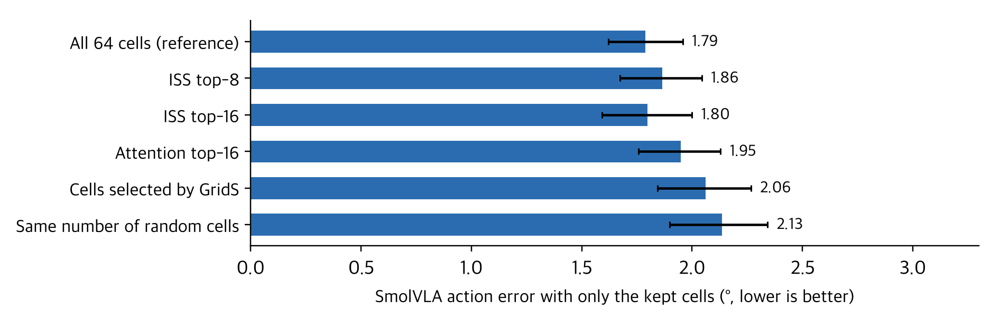

An XAI Analysis of VLA Token Pruning:
Does Action-Loss-Driven Visual Token Selection Really Select What Matters?
바이오의공학부 2023250031 서청운
GridS 점은 중요한 곳을 고르지 않는다. 볼 곳은 그 뒤의 attention이 고른다.
위 SmolVLA attention: 블록을 따라감 · 아래 GridS 16점: 거의 제자리 · 같은 Val episode
RQ1 · Overlap with Important Cells
GridS 점은 가리면 예측이 크게 바뀌는 칸(ISS)에 놓이는가?

표시한 칸만 남기고 나머지를 가렸을 때 SmolVLA 동작 오차 · GridS가 고른 칸 ≈ 같은 수 무작위 칸
아니다. ISS 상위 16칸에 들어간 비율 0.34~0.36 (무작위 0.33)
RQ2 · Coordinate Swap
좌표만 영역 안 무작위로 바꾸면 실제 작업이 무너지는가?
GridS 학습된 좌표 · 성공 11/20
같은 모델, 영역 안 무작위 좌표 · 성공 7/20
거의 달라지지 않는다. 오프라인 오차 +0.06° · 정확한 위치보다 영역이 중요
RQ3 · Tracking
블록이 움직이면 점도 따라 움직이는가?
따라가지 않는다. 블록 위치와의 상관 (belly / wrist): GridS 점 0.06 / 0.09 · SmolVLA attention 0.71 / 0.53 (맨 위 영상)
RQ4 · Why Points Stay Fixed Over Time
그렇다면 왜 점은 중요한 곳으로 가지 않는가?
점 크기·색 GridS 내부 attention · ★ 가중 평균 위치 · + 블록
학습 중 GridS 점 · 초반에 조금 움직인 뒤 멈춤
볼 곳은 attention이 고른다. 고정된 점 중 블록 쪽에 attention이 쏠림 (0.29 / 0.63) · 점을 고정한 학습이 더 빨랐고 Val 오차는 같음 (4.79° vs 4.74°)